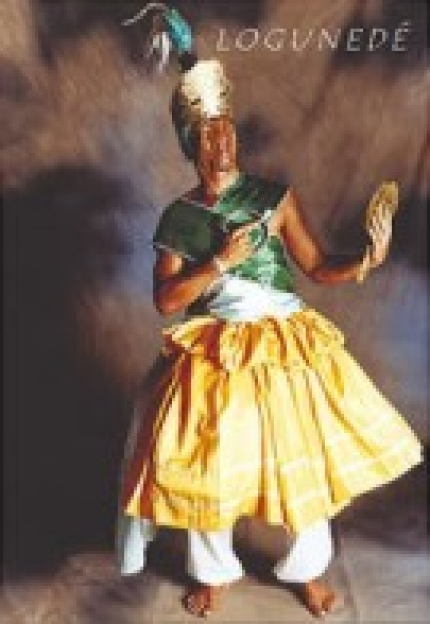

Jonville,Quarta-feira, 27 de Fevereiro de 2013

LOGUN EDÉ
O Òrìsà da Mágia e da Boa Sorte. Logun-Edé era filho de Osun e Osóssi. Sem poder viver no palácio de Osun, foi criado por Oiá na beira do rio. Osóssi seu pai, era demasiado rude e não conseguia conviver com o filho, sumindo por longo tempo em suas caçadas. Logun, afeiçoado pela mãe, vez por outra ia ao palácio de Sango, onde Osun vivia. Logun vestia-se de mulher pois Sango era ciumento e não permitia a entrada de homens em sua morada. Assim, Logun passava dias e dias vestido de mulher mas na companhia de sua mãe e das outras rainhas. Um dia houve uma grande festa no orun à qual todos os orisás compareceram com seus melhores trajes. Logun-Edé, que vivia na beira do rio a caçar e pescar não possuía trajes belos. Foi então que vestiu-se com as roupas que Osun lhe dera para disfarçar-se e com elas foi à grande recepção. Ao chegar, todos ficaram admirados com a beleza de Logun-Edé, e perguntavam: "Quem é esta formosura tão parecida com Osun?". Ifá, muito curioso, chegou perto do rapaz e levantou o filá que cobria seu rosto. Logun-Edé ficou desesperado e saiu da festa correndo, com medo que todos descobrissem sua farsa. Entrou na floresta correndo e foi avistado por Osóssi que o seguiu, sem reconhecê-lo, encantado com sua beleza. Logun-Edé, de tanto correr fugindo à perseguição do caçador, caiu cansado. Osóssi então atirou-se sobre ele e possuiu-o ali mesmo.
Estava Òsóssì o rei da caça a caminhar por um lindo bosque em companhia de sua amada esposa Òsún, dona da beleza da riqueza e portadora dos segredos da maternidade. Quando de seu passeio, foi avistado por Òsún um lindo menino que estava a beira do caminho a chorar, encontrando-se perdido, Òsún de pronto agrado, acolheu e amparou o garoto, onde surgiu nesse exato momento uma grande identificação, entre ele, Òsún e Òsóssì. Durante muitos an os Òsún e Òsóssì, cuidaram e protegeram-lhe, sendo que, Òsún procurou durante todo esse tempo a mãe do menino, porém sem sucesso, resolveu te-lo como próprio filho. O tempo foi passando e Òsóssì, vestiu o menino com roupas de caça e ornamentou-o com pele de animais, proveniente de suas caçadas. Ensinou a arte da caça, de como manejar e empunhar o arco e a flecha, ensinou os princípios da confraternidade para com as pessoas e o dom do plantio e da colheita, ensinou a ser audaz e a ter paciência, a arte e a leveza, a astúcia e a destreza, provenientes de um verdadeiro caçador. Òsún por sua fez, ensinou ao garoto o dom da beleza, o dom da elegância e da vaidade, ensinou a arte da feitiçaria, o poder da sedução, a viver e sobreviver sobre o mundo das águas doces, ensinou seus segredos e mistérios. Foi batizado por sua mãe e por seu pai de Lógún Edé, o príncipe das matas e o caçador sobre as águas. Viveu durante anos sobre a proteção de pai e mãe, tornando-se um só, aprendendo a ser homem, justo e bondoso, herdando a riqueza de Òsún e a fartura de Òsóssì, adquirindo princípios de um e princípios de outro, tornando-se herdeiro até nos dias de hoje de tudo que seu pai Òsóssì carrega e sua mãe Òsún leva.
Estava Òsóssì o rei da caça a caminhar por um lindo bosque em companhia de sua amada esposa Òsún, dona da beleza da riqueza e portadora dos segredos da maternidade. Quando de seu passeio, foi avistado por Òsún um lindo menino que estava a beira do caminho a chorar, encontrando-se perdido, Òsún de pronto agrado, acolheu e amparou o garoto, onde surgiu nesse exato momento uma grande identificação, entre ele, Òsún e Òsóssì. Durante muitos an os Òsún e Òsóssì, cuidaram e protegeram-lhe, sendo que, Òsún procurou durante todo esse tempo a mãe do menino, porém sem sucesso, resolveu te-lo como próprio filho. O tempo foi passando e Òsóssì, vestiu o menino com roupas de caça e ornamentou-o com pele de animais, proveniente de suas caçadas. Ensinou a arte da caça, de como manejar e empunhar o arco e a flecha, ensinou os princípios da confraternidade para com as pessoas e o dom do plantio e da colheita, ensinou a ser audaz e a ter paciência, a arte e a leveza, a astúcia e a destreza, provenientes de um verdadeiro caçador. Òsún por sua fez, ensinou ao garoto o dom da beleza, o dom da elegância e da vaidade, ensinou a arte da feitiçaria, o poder da sedução, a viver e sobreviver sobre o mundo das águas doces, ensinou seus segredos e mistérios. Foi batizado por sua mãe e por seu pai de Lógún Edé, o príncipe das matas e o caçador sobre as águas. Viveu durante anos sobre a proteção de pai e mãe, tornando-se um só, aprendendo a ser homem, justo e bondoso, herdando a riqueza de Òsún e a fartura de Òsóssì, adquirindo princípios de um e princípios de outro, tornando-se herdeiro até nos dias de hoje de tudo que seu pai Òsóssì carrega e sua mãe Òsún leva.
Copyright © 2011- Todos direitos reservados à ACCAIA
Rua Arildo Jose da Silva,99 - Itinga Joinville - SC - Cep: 89245000
::: Suporte 04791261971 :::
Editor on line